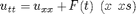
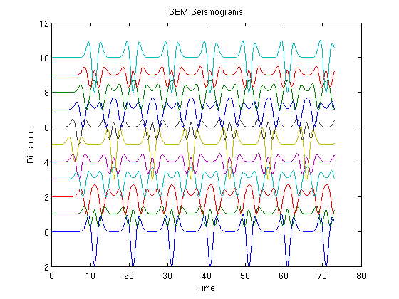

SEM1D
Spectral Element Method solver for the 1D wave equation

with a time dependent point source F(t) located at x=xs, zero initial conditions and Dirichlet boundary conditions.
This script is intended for tutorial purposes.
Jean-Paul Ampuero <mailto:ampuero@erdw.ethz.ch ampuero@erdw.ethz.ch>
Contents
STEP 1: SET PARAMETERS
L=10; % domain size NEL = 10; % number of elements P = 6; % polynomial degree CFL = 0.86; % stability number (<=0.86) NT = 1000; % number of timesteps Fx = 5; % location of point source (required if F_IS_WAVE=0) Ff0 = 0.25; % fundamental frequency of the source OUTx = (0:L/NEL:L)'; % output receivers at these locations
STEP 2: INITIALIZATION
%-- Build the "macro-mesh": % The domain [0,L] is divided into NEL non overlapping elements % The elements are defined by their "control nodes" X X = (0:NEL)'*L/NEL; %-- Build the SEM grid: % SEM is a high-order method, each element of the macro-mesh % contains a spectral sub-grid of Gauss-Lobato-Legendre (GLL) internal nodes NGLL = P+1; % = number of GLL nodes per element [iglob,coor,nglob] = mesh1d(X,NGLL); % creates the SEM grid % Look at the outputs in "help mesh1d". % You may be wondering what are "global" and "local" numberings. % Let's take an example. Consider a mesh of 3 elements with index e = 1 to 3 % %X(1) X(2) X(3) X(4) % |----------- 1 -----------|----------- 2 -----------|----------- 3 -----------| % : : : : % Let's assume P=4 (NGLL=5). Each element is provided with a non uniform subgrid % of 5 GLL nodes ("o" are internal and "0" are inter-element nodes): % : : : : % 0----o-------o-------o----0----o-------o-------o----0----o-------o-------o----0 % : : : : % Their global numbering is a continuous non redundant index: % : : : : % 1 2 3 4 5 6 7 8 9 10 11 12 13 % : : : : % whereas their local numbering is a pair of indices (GLL-index,element-index): % : : : : %(1,1)(2,1) (3,1) (4,1)(5,1) (1,3)(2,3) (3,3) (4,3)(5,3) % (1,2)(2,2) (3,2) (4,2)(5,2) % % "iglob" is the table that allows to go from local to global indices, % i.e. iglob(i,e) is the global index of the i-th GLL node in the e-th element, % and "coor" are the coordinates of the "nglob" global nodes. % % In a SEM grid any quantity XXX with values at each node % can be stored either in "local storage" mode, where XXX(i,e) is the value at % the i-th GLL node of the e-th element, or in "global storage" mode, % where XXX(k) is the value at the k-th global node. % The choice depends on the usage of XXX. % The local storage is more convenient for element-by-element access % whereas the global storage naturally avoids redundant operations. % Quantities that can be discontinuous across elements must be in local storage, % global storage is better for quantities that are continuous across elements. %-- Compute the mass and stiffness matrices % By SEM space-discretization the 1D wave equation is reduced % to the following algebraic system of ODEs: % % M*a = -K*d +F % % where M is the mass matrix and K the stiffness matrix. % M is diagonal by construction. % K is sparse, with blocks corresponding to the elements, so only the % elementary contributions are stored. [M,K] = BuildMK_1d(coor,iglob); % Have a look at BuilMK_1d.m for more details. % It is the first example of how a global array (the diagonal M of the mass matrix) % is assembled from elementary contributions with the help of the % local-to-global table "iglob". %-- Set the time step according to the stability condition dt = CFL*(coor(2)-coor(1)); % = CFL * minimum_GLL_node_spacing t = (1:NT) *dt; %-- Initialize kinematic fields, stored in global arrays d = zeros(nglob,1); % displacement v = zeros(nglob,1); % velocity a = zeros(nglob,1); % acceleration %-- Source term % A point force located at Fx % For simplicity we relocate it to the nearest GLL node: [Fdist,Fix] = min( abs(coor-Fx) ); % The source time function is a Ricker wavelet Ft = src_timef( t-0.5*dt,'ricker', Ff0); % at mid-steps, see time-stepping scheme %-- Output arrays OUTnx = length(OUTx); % relocate the receivers to the nearest GLL node for i=1:OUTnx, [OUTdist(i),OUTix(i)] = min( abs(coor-OUTx(i)) ); end OUTx = coor(OUTix); OUTd = zeros(OUTnx,NT); OUTv = zeros(OUTnx,NT); OUTa = zeros(OUTnx,NT); %------------------------------------------
STEP 3: SOLVER
The time-discretization of M*a = -K*d +F is done here with an explicit Newmark scheme (HHT-alpha) with alpha=beta=1/2 and gamma=1
M*a(t+1) = -K*d(t+1/2) +F(t+1/2) d(t+1) = d(t) + dt*v(t) +0.5*dt^2 *a(t+1) v(t+1) = v(t) + dt*a(t+1)
implemented as an explicit predictor-corrector:
for it=1:NT, % Begin time loop ... % 1. predictor at mid-step t+0.5, assuming a(t+1)=0 % dpre = d(t) +0.5*dt*v(t) d = d + 0.5*dt*v; % 2. solve for a(t+1) in M*a(t+1) = -K*dpre +F(t+0.5) % a(:) = 0; % Predicted internal forces for e=1:NEL, % at mid-step, -K*dpre, ix = iglob(:,e); % temporarily stored in global array "a". a(ix) = a(ix) - K(:,:,e)*d(ix) ; % Note again the usage of "iglob" to end % assemble the elementary contributions. a(Fix) = a(Fix) + Ft(it); % Add source a = a ./M ; % Solve: a(t+1) = (-K*d_mid +F)/M % 3. corrector % v(t+1) = v(t) + dt*a(t+1) % d(t+1) = dpre + 0.5*dt*v(t+1) v = v + dt*a; d = d + 0.5*dt*v; %------------------------------------------ % STEP 4: OUTPUT OUTd(:,it) = d(OUTix); OUTv(:,it) = v(OUTix); OUTa(:,it) = a(OUTix); end % ... of time loop PlotSeisTrace(OUTx,t,OUTv);
Amplitude (trace to trace) = 0.499929